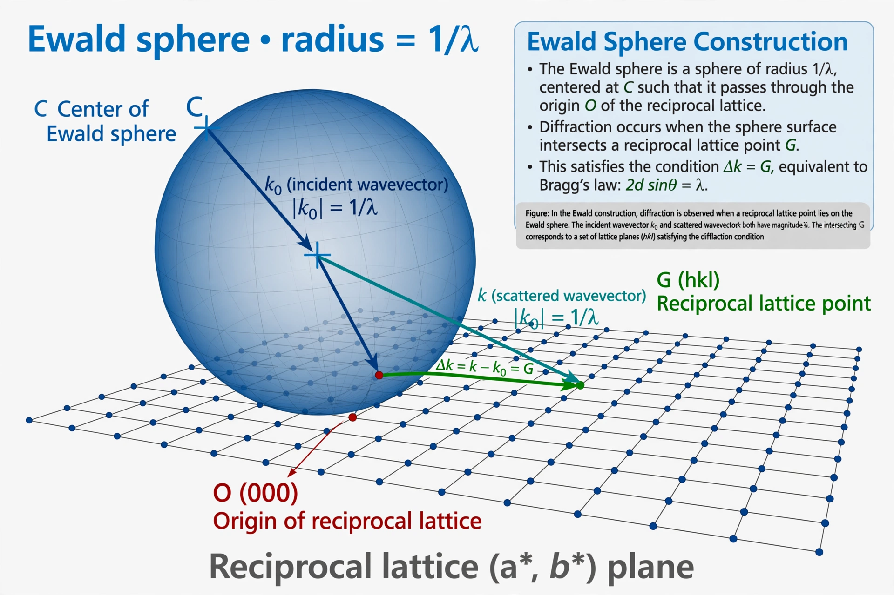

The Ewald sphere is a geometric construction used in crystallography to visualize the conditions for diffraction of X-rays, electrons, or neutrons by a crystal. It was devised by the German physicist Paul Peter Ewald and is named after him. The construction gives a simple graphical interpretation of the Laue equations and of Bragg's law.
Work in reciprocal space, where the crystal's reciprocal lattice is plotted. Draw a sphere of radius 1/λ (the magnitude of the incident wave vector) centred on the crystal, positioned so that the incident beam vector, drawn from the sphere's centre, ends at the origin of the reciprocal lattice. Any other reciprocal-lattice point that lies exactly on the surface of this sphere satisfies the Laue diffraction conditions for the corresponding set of lattice planes: the vector from the sphere's centre to that point is the diffracted beam direction, and the angle between incident and diffracted beams is 2θ.
Because a stationary crystal and monochromatic beam generally put few reciprocal points on the sphere, experimental techniques manipulate the geometry: the rotation (oscillation) method rotates the crystal so reciprocal points sweep through the sphere, while the Laue method uses a spectrum of wavelengths, effectively a family of spheres of different radii. The limiting sphere (radius 2/λ) bounds all reflections measurable at a given wavelength. The construction, first developed by Ewald in his work on the dynamical theory of diffraction following Laue's discovery, remains central to interpreting diffraction patterns and determining crystal structures.
Categories: Crystallography | Diffraction